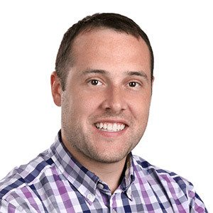
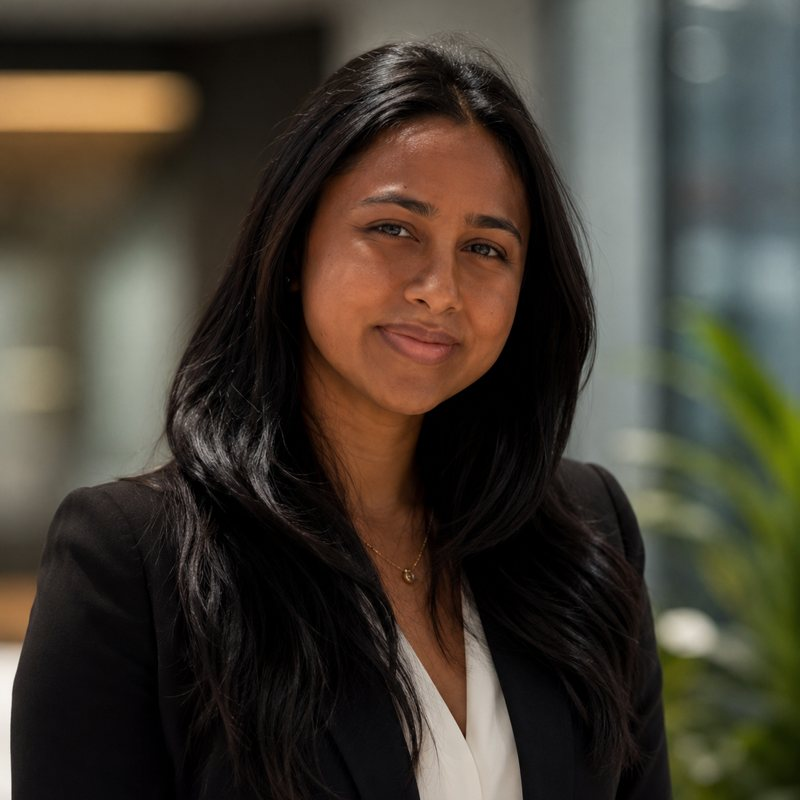
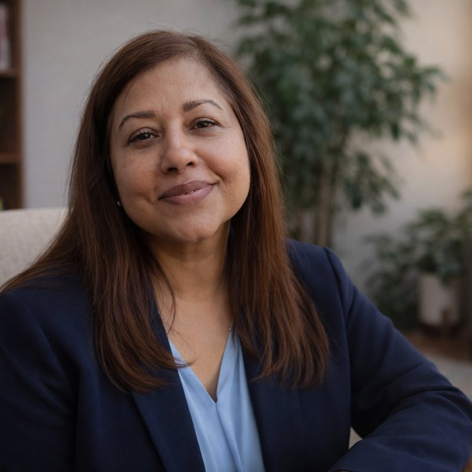
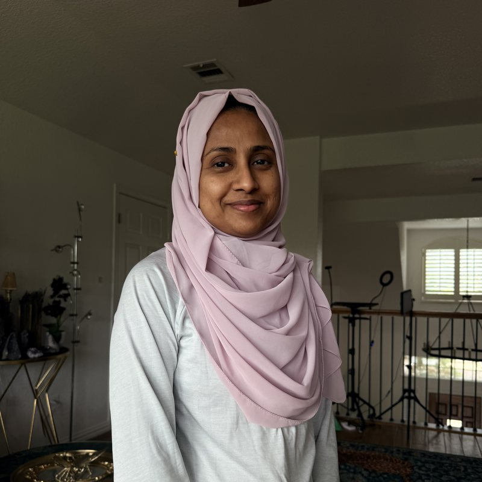

Nine teachers for twelve students. From industry, academia, and clinical practice.
The four named below lead program design, curriculum, and delivery — all as volunteers. Behind them: a licensed clinical counselor, a small-business accounting professional, an enterprise marketing director, and specialists in prospecting and administration.
Started her first business at sixteen. Ten years designing systems for service-based small businesses. Leads program design, funder relations, and the campus vision — because she knows exactly what one real shot at ownership can do.

Works full-time on program delivery. Leads the AI curriculum, software toolchain, and automation coursework participants build their agencies on — every tool a student touches, he has already built with.

Professor and Chair of Mathematics & Computer Science at Southern Arkansas University. Research sponsored by DARPA, AFOSR, AFRL, and NASA; co-lead on a $20M NSF data-analytics initiative. He brings university-level rigor to a six-month intensive.

Leads participant onboarding, near-peer mentorship, and Foundation outreach to university networks. The nearest generation to the students in the cohort — and proof of where the path leads.

Licensed Professional Counselor Associate with 17 years working with families as an educator and school counselor. Trauma-informed, working across four languages, she works as a counselor in Texas and leads clinical support for the cohort.

Supports instruction, participant administration, and the day-to-day operations that keep a twelve-seat, nine-teacher program running — the steady hands behind the cohort.
Plus extended faculty covering small-business accounting, enterprise marketing, prospecting, and administration — nine volunteer teachers for twelve students, at zero cost to the student.
Azgari Lipshy (President & Director) · Stephen Dugan · Dr. Md Enamul Karim · Khadijah Karim ·Nasreen Ahmed · Rowshanara Moly
Bylaws, conflict-of-interest policy, code of conduct, and the IRS determination letter are available to funders on request.